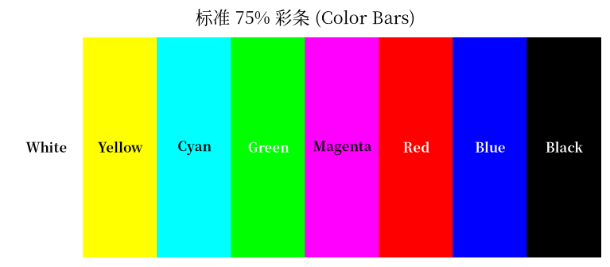
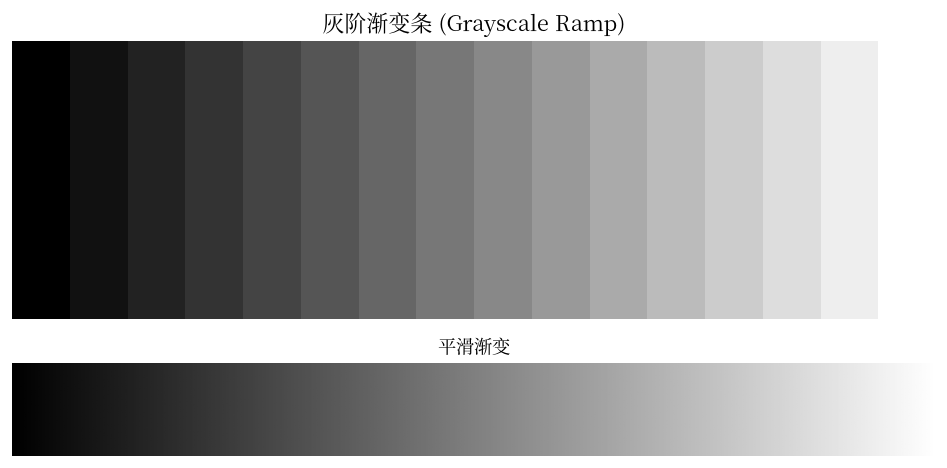
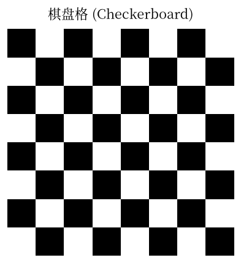
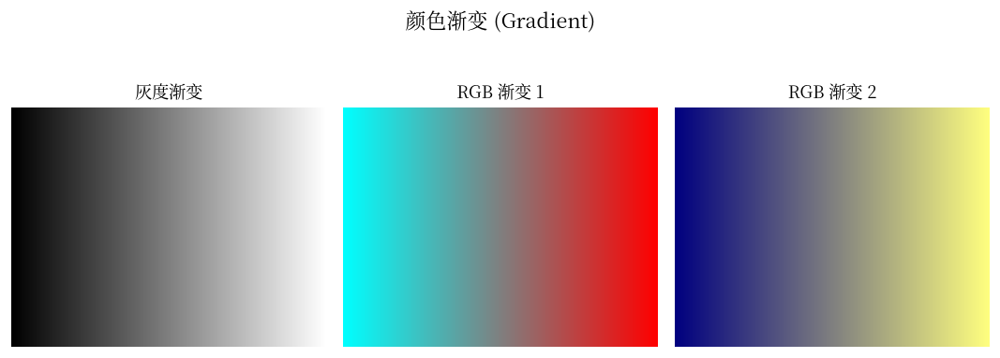
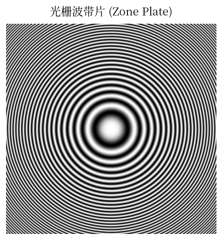
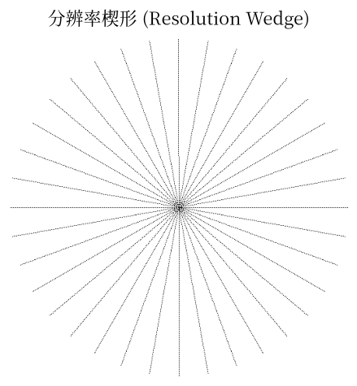
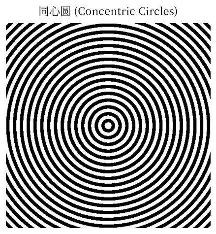
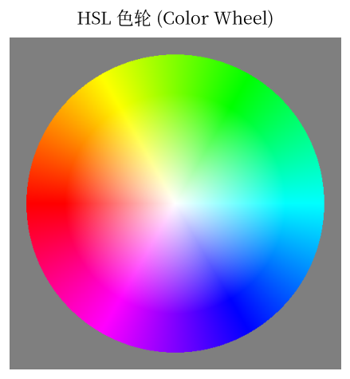
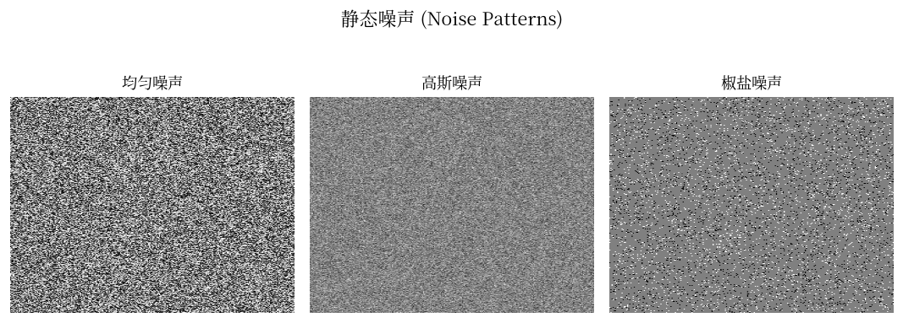
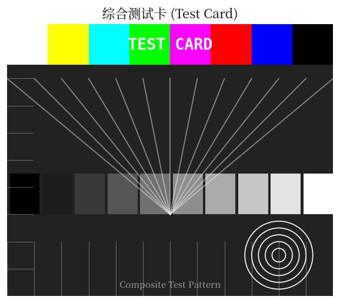

虚拟视频驱动 vivid · Test Pattern 生成原理 · NumPy 实现 · 10 种标准测试图形
Linux 7.0.12 · vivid · TPGLinux 内核中的 vivid（Virtual Video Test Driver）是一个虚拟视频驱动，用于测试 V4L2（Video for Linux 2）框架的各种功能。它内部实现了 TPG（Test Pattern Generator），可以生成多种标准测试图形，供视频采集、编码、显示等子系统的开发调试使用。
这些测试图形在视频测试领域有着广泛的应用：
本文使用 NumPy + Matplotlib 重新实现 vivid 中的典型测试图形，并给出完整 Python 源码。
标准 75% 彩条是视频测试中最基础的图形。vivid 的 TPG_COLOR_BARS 模式生成 8 条垂直色块：白、黄、青、绿、品红、红、蓝、黑（75% 幅度）。彩条用于检测颜色空间转换、亮度和色度分离的正确性。

import numpy as np
import matplotlib.pyplot as plt
from matplotlib import patches
colors = [
('White', (255,255,255)), ('Yellow', (255,255,0)),
('Cyan', (0, 255, 255)), ('Green', (0, 255, 0)),
('Magenta',(255,0,255)), ('Red', (255,0,0)),
('Blue', (0, 0, 255)), ('Black', (0,0,0)),
]
fig, ax = plt.subplots(figsize=(8, 3))
w = 1.0 / len(colors)
for i, (name, (r,g,b)) in enumerate(colors):
ax.add_patch(patches.Rectangle(
(i*w, 0), w, 1, color=np.array([r,g,b])/255))
ax.text(i*w + w/2, 0.5, name, ha='center',
va='center', fontsize=10, fontweight='bold',
color='white' if sum([r,g,b])<384 else 'black')
ax.set_xlim(0, 1); ax.set_ylim(0, 1)
ax.axis('off')
plt.show()灰阶渐变条从纯黑到纯白分为 16 个阶梯，用于测试亮度的线性度和对比度响应。下方平滑渐变展示连续亮度变化。vivid 通过 TPG_GRAY_RAMP 生成类似图形，用于验证亮度量化精度。

import numpy as np
import matplotlib.pyplot as plt
# 16 阶渐变
bars = np.tile(np.linspace(0, 1, 16), (100, 1))
# 平滑渐变
smooth = np.tile(np.linspace(0, 1, 512), (50, 1))
fig, axes = plt.subplots(2, 1, figsize=(8, 4),
gridspec_kw={'height_ratios': [3, 1]})
axes[0].imshow(bars, cmap='gray', aspect='auto',
interpolation='nearest')
axes[0].axis('off')
axes[0].set_title('灰阶渐变条 (Grayscale Ramp)')
axes[1].imshow(smooth, cmap='gray', aspect='auto')
axes[1].axis('off')
axes[1].set_title('平滑渐变')
plt.tight_layout()
plt.show()棋盘格是图像传感器测试和摄像头标定的标准图形。vivid 的 TPG_CHECKERBOARD 生成黑白交替的方格。通过分析棋盘格的角点偏移可以计算镜头畸变，也常用于检测像素对齐和缩放质量。

import numpy as np
import matplotlib.pyplot as plt
n = 8
img = np.zeros((n, n, 3))
img[::2, 1::2] = 1 # 偶数行奇数列
img[1::2, ::2] = 1 # 奇数行偶数列
# 放大到可视尺寸 (每个格子 32×32)
img = np.kron(img, np.ones((32, 32, 1)))
fig, ax = plt.subplots(figsize=(4, 4))
ax.imshow(img, interpolation='nearest')
ax.axis('off')
plt.show()颜色渐变用于测试颜色插值、色调连续性和 banding 效应。左图是灰度渐变，中图为红绿蓝三通道交叉渐变，右图为红-蓝双通道渐变。vivid 的 TPG_GRADIENT 模式生成水平/垂直渐变来检测去马赛克算法。

import numpy as np
import matplotlib.pyplot as plt
fig, axes = plt.subplots(1, 3, figsize=(9, 3))
# 灰度渐变
gray = np.tile(np.linspace(0, 1, 256), (100, 1))
axes[0].imshow(gray, cmap='gray', aspect='auto')
# RGB 渐变 1: 红↗绿↘蓝
rgb1 = np.zeros((100, 256, 3))
rgb1[:, :, 0] = np.linspace(0, 1, 256) # R
rgb1[:, :, 1] = np.linspace(1, 0, 256) # G
rgb1[:, :, 2] = np.linspace(0, 1, 256)[::-1] # B
axes[1].imshow(rgb1, aspect='auto')
# RGB 渐变 2: 红↗ + 绿↗
rgb2 = np.zeros((100, 256, 3))
rgb2[:, :, 0] = np.linspace(0, 1, 256)
rgb2[:, :, 1] = np.linspace(0, 1, 256)
rgb2[:, :, 2] = 0.5
axes[2].imshow(rgb2, aspect='auto')
for ax in axes: ax.axis('off')
plt.tight_layout()
plt.show()波带片是视频测试中最关键的图形之一。vivid 的 TPG_ZONE_PLATE 生成同心圆频率扫描图案，频率从中心到边缘递增。它用于检测：

import numpy as np
import matplotlib.pyplot as plt
n = 512
x = np.linspace(-1, 1, n)
y = np.linspace(-1, 1, n)
X, Y = np.meshgrid(x, y)
R = np.sqrt(X**2 + Y**2)
zone = 0.5 + 0.5 * np.cos(40 * np.pi * R**2)
fig, ax = plt.subplots(figsize=(4.5, 4.5))
ax.imshow(zone, cmap='gray', extent=[-1, 1, -1, 1])
ax.axis('off')
plt.show()分辨率楔形由从中心向外辐射的线条组成，用于检测图像在各个方向上的分辨能力。vivid 没有直接对应模式，但这是摄像头测试中常用的图形。线条密度从中心到边缘变化，通过观察线条的可分辨程度判断极限分辨率。

import numpy as np
import matplotlib.pyplot as plt
n = 512
img = np.ones((n, n))
cx, cy = n//2, n//2
for k in range(36): # 36 根辐射线
angle = k * np.pi / 18
for r in range(1, n//2, 2):
x1 = int(cx + r*np.cos(angle))
y1 = int(cy + r*np.sin(angle))
x2 = int(cx + (r+1)*np.cos(angle))
y2 = int(cy + (r+1)*np.sin(angle))
if 0 <= x1 < n and 0 <= y1 < n:
img[y1, x1] = 0
fig, ax = plt.subplots(figsize=(4.5, 4.5))
ax.imshow(img, cmap='gray', extent=[-1, 1, -1, 1])
ax.axis('off')
plt.show()同心圆图案模拟 vivid 的 TPG_CIRCLES 模式。使用二值化正弦波生成交替的黑白圆环，常用于检测几何失真、像素宽高比和显示器的线性度。环的密度从内到外递增，可同时测试低频和高频响应。

import numpy as np
import matplotlib.pyplot as plt
n = 512
x = np.linspace(-1, 1, n)
y = np.linspace(-1, 1, n)
X, Y = np.meshgrid(x, y)
R = np.sqrt(X**2 + Y**2)
circles = np.sin(30 * np.pi * R) > 0
fig, ax = plt.subplots(figsize=(4.5, 4.5))
ax.imshow(circles, cmap='gray', extent=[-1, 1, -1, 1])
circle = plt.Circle((0,0), 1, fill=False,
edgecolor='#ccc', linewidth=0.5)
ax.add_patch(circle)
ax.axis('off')
plt.show()HSL 色轮将色相（Hue）映射到圆周角度、饱和度（Saturation）映射到半径，完整展示 HSV/HSL 色彩空间。色轮用于测试颜色传感器的色彩还原能力、白平衡算法的准确性，以及色彩空间的转换精度。

import numpy as np
import matplotlib.pyplot as plt
n = 512
x = np.linspace(-1, 1, n)
y = np.linspace(-1, 1, n)
X, Y = np.meshgrid(x, y)
R = np.sqrt(X**2 + Y**2)
H = (np.arctan2(Y, X) / (2*np.pi) + 0.5) % 1.0
S = np.minimum(R * 1.5, 1.0)
V = np.ones_like(H)
# HSV → RGB
hi = (H * 6).astype(int) % 6
f = (H * 6) - hi
p = V * (1 - S); q = V * (1 - S * f)
t = V * (1 - S * (1 - f))
rgb = np.zeros((n, n, 3))
for i, (r1,r2,r3) in enumerate(
[(V,t,p),(q,V,p),(p,V,t),(p,q,V),(t,p,V),(V,p,q)]):
mask = hi == i
rgb[mask,0]=r1[mask]; rgb[mask,1]=r2[mask]
rgb[mask,2]=r3[mask]
fig, ax = plt.subplots(figsize=(4.5, 4.5))
ax.imshow(rgb, extent=[-1, 1, -1, 1])
ax.axis('off')
plt.show()噪声图案是视频编码和图像处理测试的重要工具。vivid 的 TPG_NOISE 模式生成随机噪声。三种典型噪声：
np.random.rand，像素值在 [0,1) 均匀分布np.random.randn，模拟传感器热噪声
import numpy as np
import matplotlib.pyplot as plt
np.random.seed(42)
# 均匀噪声
uniform = np.random.rand(256, 256)
# 高斯噪声
gauss = np.random.randn(256, 256)
gauss = (gauss - gauss.min()) / (gauss.max() - gauss.min())
# 椒盐噪声 (5% 白点 + 5% 黑点)
sp = np.random.rand(256, 256)
sp = np.where(sp < 0.05, 0,
np.where(sp > 0.95, 1, 0.5))
fig, axes = plt.subplots(1, 3, figsize=(9, 3))
titles = ['均匀噪声', '高斯噪声', '椒盐噪声']
for ax, img, title in zip(axes, [uniform, gauss, sp], titles):
ax.imshow(img, cmap='gray', aspect='auto')
ax.axis('off')
ax.set_title(title)
plt.tight_layout()
plt.show()综合测试卡将多种测试元素整合在一张图中，类似传统电视测试卡（如 Philips PM5544）。vivid 虽然没有直接对应模式，但综合测试卡在摄像头调试中极为常用。包含彩条、辐射线、灰阶条、同心圆等元素，一次性评估多项图像质量指标。

import numpy as np
import matplotlib.pyplot as plt
from matplotlib import patches
fig, ax = plt.subplots(figsize=(6, 5))
ax.set_xlim(0, 12); ax.set_ylim(0, 10)
ax.set_aspect('equal'); ax.axis('off')
# 背景
ax.add_patch(patches.Rectangle((0,0), 12, 10, facecolor='#222'))
# 顶部彩条
cbar = ['#fff','#ff0','#0ff','#0f0','#f0f','#f00','#00f','#000']
for i, c in enumerate(cbar):
ax.add_patch(patches.Rectangle(
(i*1.5, 8.5), 1.5, 1.5, facecolor=c))
# 辐射线
for i in range(13):
ax.plot([i, 6], [8, 3], 'w-', lw=1, alpha=0.5)
# 灰阶条
for i in range(10):
v = i/9
ax.add_patch(patches.Rectangle(
(i*1.2+0.1, 3), 1.1, 1.5, facecolor=[v,v,v]))
# 同心圆
for r in range(1, 6):
ax.add_patch(plt.Circle(
(10, 1.5), r*0.25, fill=False, edgecolor='w', lw=1))
# 网格
for i in range(13):
ax.axvline(i, 0, 0.2, color='w', lw=0.5, alpha=0.4)
for i in range(11):
ax.axhline(i, 0, 0.08, color='w', lw=0.5, alpha=0.4)
ax.text(6, 9.5, 'TEST CARD', ha='center', va='top',
fontsize=16, fontweight='bold', color='white')
plt.show()drivers/media/test-drivers/vivid/vivid-tpg*.{c,h}